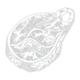

La Boucherie
Bienvenue dans notre espace boucherie, où passion et savoir-faire se rencontrent pour vous offrir une expérience gustative authentique. Chez nous, la viande n'est pas simplement un produit – c'est un art que nous cultivons avec respect et minutie.
Voir la Carte
